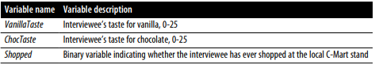
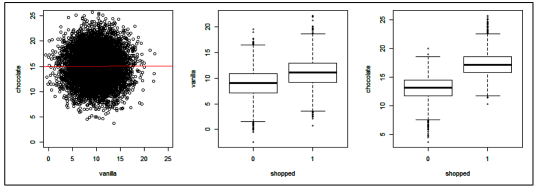
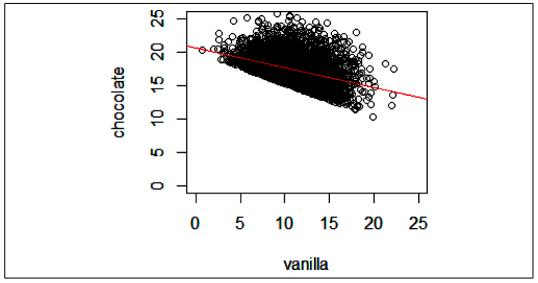

Introductory part to a series on Florent Buisson’s book, Behavioral Data Analysis with R & Python
causal regression modelling
statistics
Author
Edun Joshua
Published
November 30, 2023
Disclaimer
Please Note: The ideas presented in this article are not my own original thoughts. This material is merely a condensed version of my study notes based on Florent Buisson’s excellent book. Due to the need for brevity, certain nuances of these concepts have been omitted. For a more comprehensive understanding, please refer to the original source.
Causal Analytics: 🕵️♂️Unraveling the Mystery Behind Why Things Happen
Predictive analytics is like having a super cool fortune teller 🔮who can predict what’s going to happen next. But causal analytics is like being a detective 🕵️♀️🕵️♂️, trying to figure out why things happen in the first place 🤔. In predictive analytics, we just want to find a bunch of clues 🕵️♀️🕵️♂️ that can help us guess what’s going to happen next, even if those clues aren’t actually causing it to happen. But in causal analytics, we’re not just interested in guessing 🔮, we want to understand the real reasons behind things 🧠.
Imagine you want to know if eating more fruits and veggies 🍎🥦 will make you healthier 💪. Predictive analytics might tell you that people who eat more fruits and veggies tend to be healthier, but that doesn’t mean the fruits and veggies are actually causing the better health. It could be that healthier people just tend to make healthier choices overall 🏃♀️🚴🥗.
So, how do we really know if eating more fruits and veggies is making us healthier? That’s where causal analytics comes in 🕵️♀️🕵️♂️. We need to carefully choose the clues we use to solve the mystery, making sure they’re not just guessing 🔮but actually helping us understand the real reasons behind things 🧠.
Why Correlation Is Not Causation: A Confounder in Action
Imagine you’re an ice cream 🍦 seller and you want to know if hotter days ☀️mean more ice cream sales 🤑. You track the temperature and your sales for a while and find that for every degree the temperature rises, your sales go up by $1,171!
summary(lm("icecream_sales ~ temps",data=df1))
Call:
lm(formula = "icecream_sales ~ temps", data = df1)
Residuals:
Min 1Q Median 3Q Max
-30272 -5197 -494 3787 37430
Coefficients:
Estimate Std. Error t value Pr(>|t|)
(Intercept) -6169.844 531.506 -11.61 <2e-16 ***
temps 1171.335 9.027 129.76 <2e-16 ***
---
Signif. codes: 0 '***' 0.001 '**' 0.01 '*' 0.05 '.' 0.1 ' ' 1
Residual standard error: 8730 on 2398 degrees of freedom
Multiple R-squared: 0.8753, Adjusted R-squared: 0.8753
F-statistic: 1.684e+04 on 1 and 2398 DF, p-value: < 2.2e-16
You’re excited and think you’ve found the perfect formula for success!🤑 But then something strange happens. October comes around and it’s a scorcher 🥵, but your sales actually drop! 😨 What gives?
After some sleuthing, you realize that the culprit is school 🏫. In the summer, kids are out of school and have more time to enjoy ice cream 🍦. But in October, they’re back in class and have less time for frozen treats.
So, even though the temperature was high, your sales dropped because of the school year. This is called a “confounder” 😵. A confounder is something that can make it look like something else is causing a (third) something when it’s actually not.
In this case, the school year made it look like the temperature was causing sales to drop, when it was really the school year all along 🏫. So, next time you’re trying to figure out what’s causing something, be sure to watch out for confounders! 👀👀
Too Many Variables Can Spoil the Broth
Remember that time when we added a bunch of random ingredients to our recipe and ended up with a weird-tasting soup? It’s the same with causal modelling.
To be fair, if your goal is only to predict a variable, you have a model that is carefully designed to generalize adequately beyond your testing data, and you don’t care about why the predicted variable is taking a certain value, then that’s a perfectly valid stance.
Let’s demonstrate this with our example by adding a variable that we might be inclined to include but will bias our regression. The variable IcedCoffeeSales is correlated with Temperature but not with SummerMonth. Let’s look at what happens to our regression if we add this variable in addition to Temperature and SummerMonth (a binary 1/0 variable that indicates if the month was July or August (1) or any other month (0)):
summary(lm(icecream_sales ~ iced_coffee_sales + temps + summer_months, data=df1))
Call:
lm(formula = icecream_sales ~ iced_coffee_sales + temps + summer_months,
data = df1)
Residuals:
Min 1Q Median 3Q Max
-25763.1 -3364.4 78.6 3317.5 27512.0
Coefficients:
Estimate Std. Error t value Pr(>|t|)
(Intercept) -15.827 374.581 -0.042 0.966
iced_coffee_sales -1.701 2.083 -0.817 0.414
temps 2702.788 2083.161 1.297 0.195
summer_months 19548.168 361.572 54.064 <2e-16 ***
---
Signif. codes: 0 '***' 0.001 '**' 0.01 '*' 0.05 '.' 0.1 ' ' 1
Residual standard error: 5859 on 2396 degrees of freedom
Multiple R-squared: 0.9439, Adjusted R-squared: 0.9438
F-statistic: 1.344e+04 on 3 and 2396 DF, p-value: < 2.2e-16
Only summer_months has a statistically significant influence on icecream_sales . The other variable are not good predictors of the target variable and only confound the model.
Another example

Survey information in chap1-survey_data.csv
Imagine you’re running an ice cream stand 🍦🍨 and you want to know if people who like chocolate ice cream 🍫are more likely to buy from your shop than people who like vanilla ice. You ask a bunch of people how much they like chocolate and vanilla ice cream (on a scale of 1 to 10, of course), and whether they’ve ever bought from your shop. You find out that some people like one but not the other, some like both equally, and some like one more than the other.

Left panel: tastes for vanilla and chocolate are uncorrelated in the overall population; middle panel: taste for vanilla is higher for people who shop at the ice cream stand than for people who don’t; right panel: same result for taste for chocolate
Checking the association between our variables we discover 2 things:
taste for vanilla ice cream and taste for chocolate ice cream are entirely uncorrelated.
How much they like vanilla and chocolate affects whether they have bought from the shop
All good so far! 👍 If we want to understand how both vanilla and chocolate ice cream preferences affect whether someone is a customer or not, then it makes sense to include both variables in our logistic regression model. 📈 But what if we want to know something different? What if we want to know how much the people who like vanilla ice cream also like chocolate ice cream? 🍦🍫 In other words, we’re interested in the relationship between how much someone likes vanilla ice cream and how much they like chocolate ice cream, but only for people who have actually bought from the ice cream stand. 🛍️ To do this, we can plot a graph of how much customers who have bought ice cream like chocolate ice cream, based on how much they like vanilla ice cream.

Taste for vanilla and chocolate among shoppers
Hmm, something’s not right! 🤨 When we looked at the relationship between how much vanilla ice cream customers like and how much chocolate ice cream they like, we found a weird pattern: people who like one flavor tend to dislike the other. 🤯 But don’t worry, vanilla lovers aren’t suddenly becoming chocolate haters, and vice versa! 👎 This strange correlation was actually caused by the way we looked at the data.
We only looked at people who had bought ice cream from the stand, and this left out a lot of people who might have liked both flavours but didn’t buy any ice cream. If someone has a weak taste for both vanilla and chocolate ice creams, they are most likely not shoppers. if someone has a strong taste for vanilla, they might shop at your stand even if they don’t have a strong taste for chocolate. However, since you excluded non-shoppers, you removed a bunch of data points that should exist in the lower left quadrant of the scatterplot. If they were included, a positive relationship would be observed.
So, next time you’re looking at data, be sure to consider all of the data points, not just the ones that fit your expectations.😉